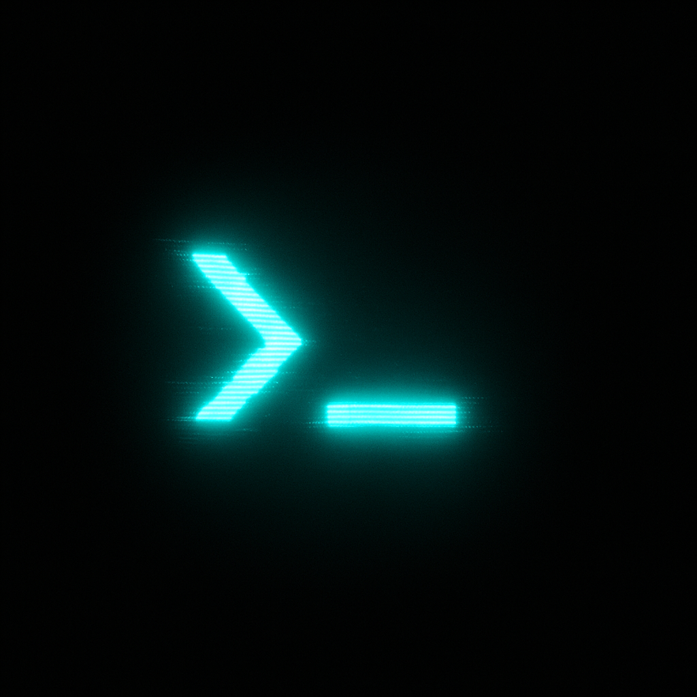

X402
✖
✖
CA (Crypto Agent)
OFFICIAL CA. SOON
promtOS
Expected integration: wallet connection, on-chain status, and token analytics.
✖
About PROMT
PROMT — a personal neural network designed for symbiosis between human and artificial intelligence.
- PROMT AI — the main intelligence core.
- CA — crypto analytics and blockchain interaction module.
- About — system description and internal architecture.
ver. 0.1 — PROMT OS © 2025
✖
>_
>_ PROMT X402 initializing...